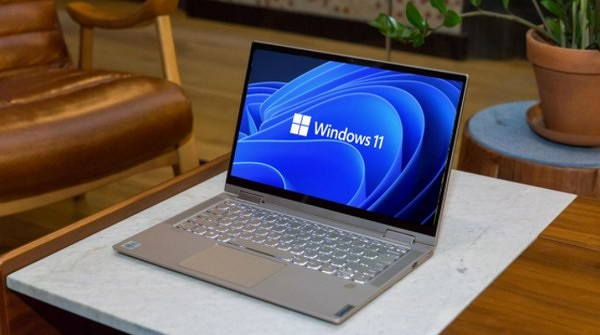
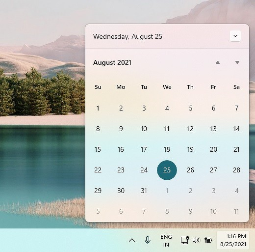
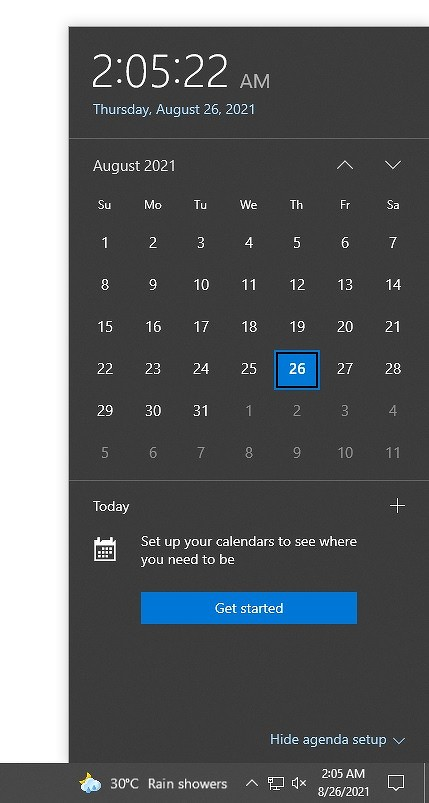

Компания Microsoft выпустила новую бета-версию Windows 11, в которой перестало работать несколько функций панели задач (таскбара). Как сообщает профильный ресурс WindowsLatest, пользователи поначалу подумали, что это сбой, который в дальнейшем будет устранен. Однако Microsoft заверила их, что эти функции были удалены целенаправленно. В частности, Microsoft «упростила» встроенный в таскбар календарь. Если в Windows 10 кликнуть по часам в правом нижнем углу, то откроется мини-приложение календаря, где будет дополнительное окно с возможностью добавления событий на нужный день.  Другими словами, это своего рода органайзер, встроенный прямо в панель задач и вызываемый по одному щелчку мышкой. Притом добавленные события синхронизировались с другими устройствами, подключенными к тем же профилям Microsoft, Exchange или Outlook.
В Windows 11 от органайзера остался только сам календарь, а добавлять события и просматривать их через таскбар больше нельзя. Пользователи спросили у Microsoft, когда она собирается исправить этот недочет, на что она ответила, что «это не баг, это фича». Вместо привычной многим функции Microsoft предложила использовать виджет календаря. Виджеты – это еще одна особенность Windows 11, перекочевавшая в систему прямиком из Windows Vista 14-летней давности.  «В новом интерфейсе виджетов есть опция календаря, которую вы можете использовать для быстрого просмотра своего личного календаря и его событий», – заявили представители софтверного гиганта на пользовательский запрос в Microsoft Feedback Hub, чем вызвали негодование сотен участников программы бета-тестирования. «Виджет отображает не все мои календари, а также он полон новостей и ненужного материала. Пожалуйста, прежний календарь, поскольку он был ИДЕАЛЬНЫМ», – отметил один пользователь в Microsoft Feedback Hub.
